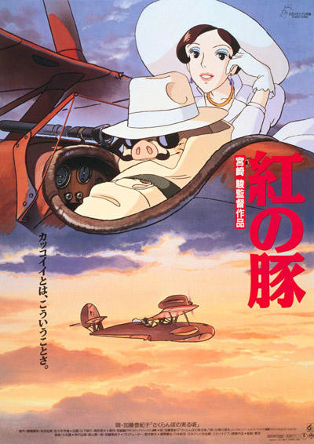
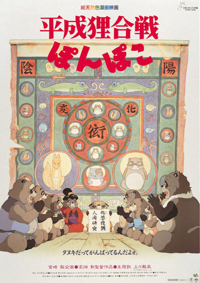
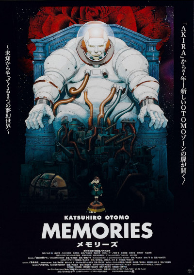
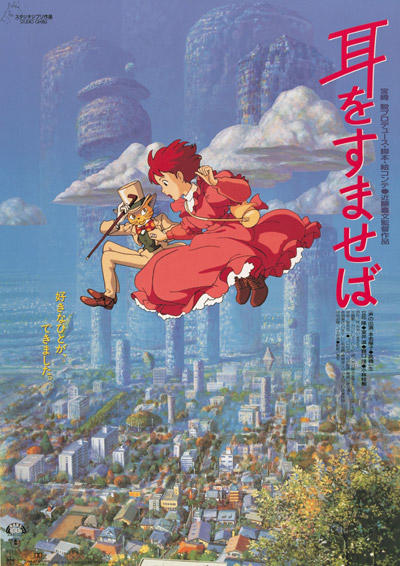

Porco RossoJulkaisuvuosi: 1992Ohjaaja: Hayao Miyazaki |
 |
|---|---|
Pom PokoJulkaisuvuosi: 1994Ohjaaja: Isao Takahata |
 |
MemoriesJulkaisuvuosi: 1995Ohjaaja: Katsuhiro Ôtomo |
 |
Sydämen kuiskausJulkaisuvuosi: 1995Ohjaaja: Yoshifumi Kondō |
 |
Prinsessa MononokeJulkaisuvuosi: 1997Ohjaaja: Hayao Miyazaki |